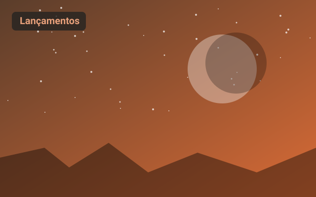
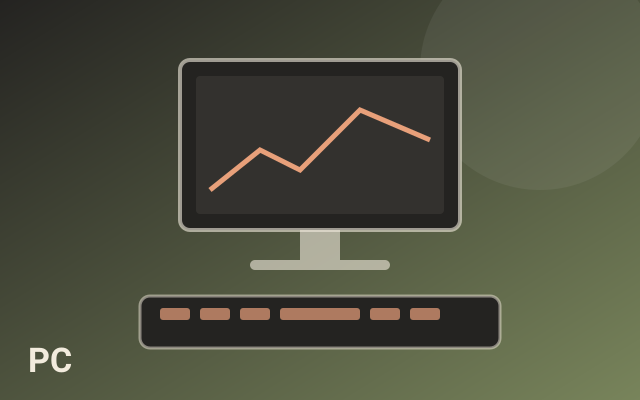
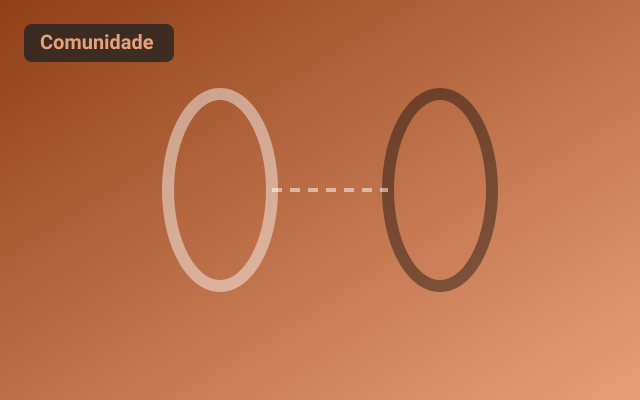

RPGAnálise
Baldur's Gate 3: liberdade para escrever a própria história
Decisões que mudam o rumo da aventura e um sistema por turnos que recompensa a criatividade.
Ler a análiseNotícias, análises, lançamentos e guias de plataformas para quem joga no PC, PlayStation, Xbox e Nintendo.
Decisões que mudam o rumo da aventura e um sistema por turnos que recompensa a criatividade.
Ler a análiseConteúdo demonstrativo. As matérias deste portal são textos explicativos criados para o projeto e não relatam fatos reais.

Do lançamento ao fim do suporte: entenda as fases que um console atravessa e por que as gerações costumam durar entre cinco e oito anos.

Mais quadros por segundo deixam a imagem mais fluida e o controle mais responsivo, mas exigem mais do hardware. Veja quando vale a pena priorizar cada opção.

Datas mudam, jogos são adiados e plataformas variam. Aprenda a conferir fontes oficiais e a diferenciar anúncio, previsão e lançamento confirmado.
Títulos fictícios. Os lançamentos futuros abaixo são exemplos criados para demonstração e não correspondem a jogos reais.
Melodia sintetizada especialmente para o projeto, sem uso de material protegido.


Da primeira geração de consoles ao mundo digital de hoje.
